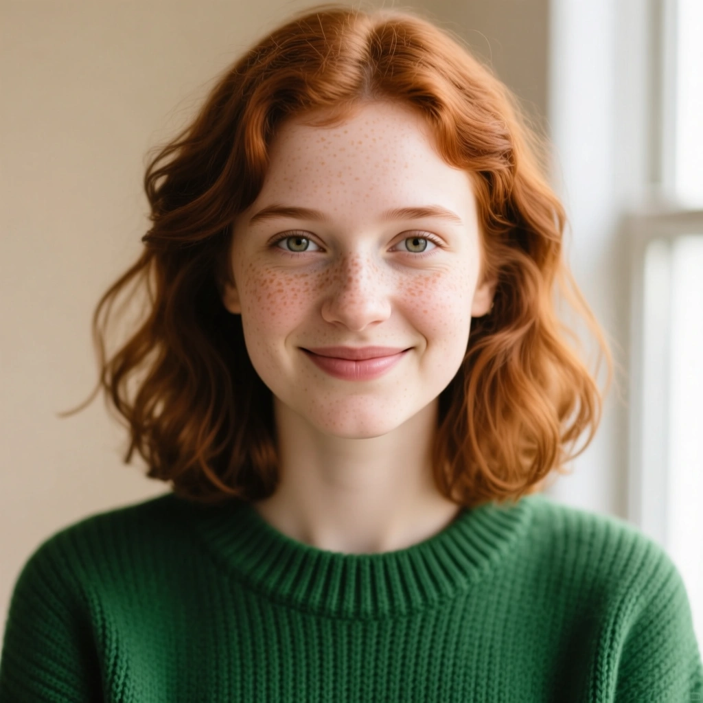
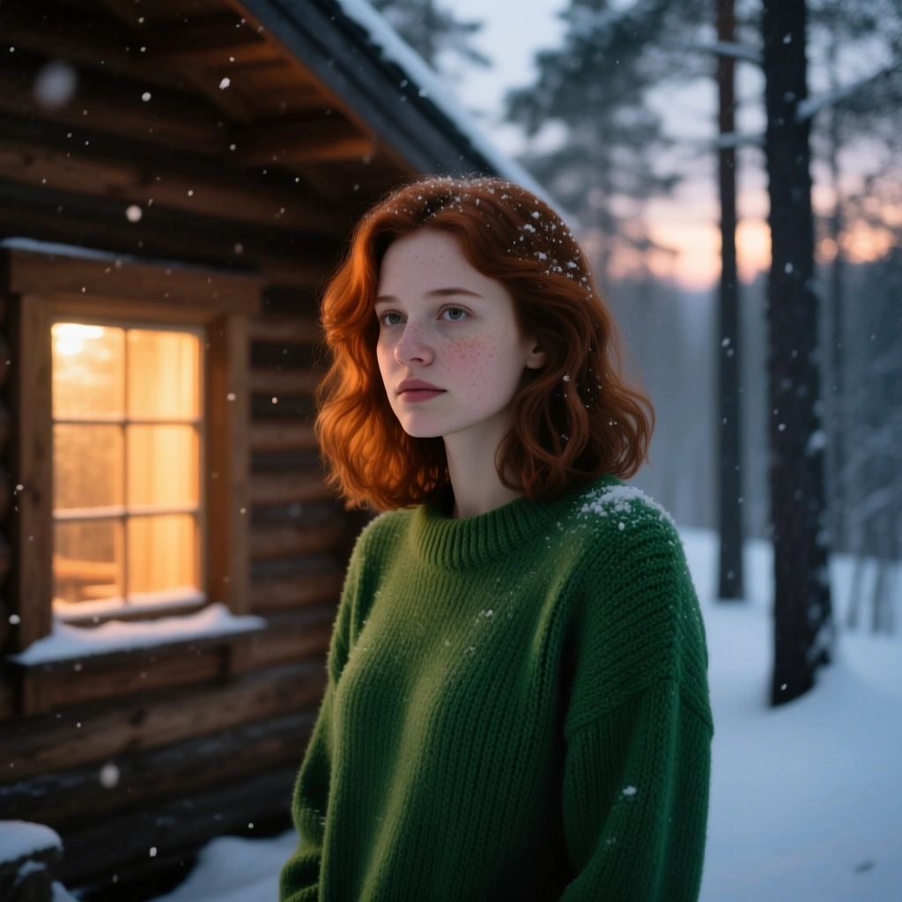
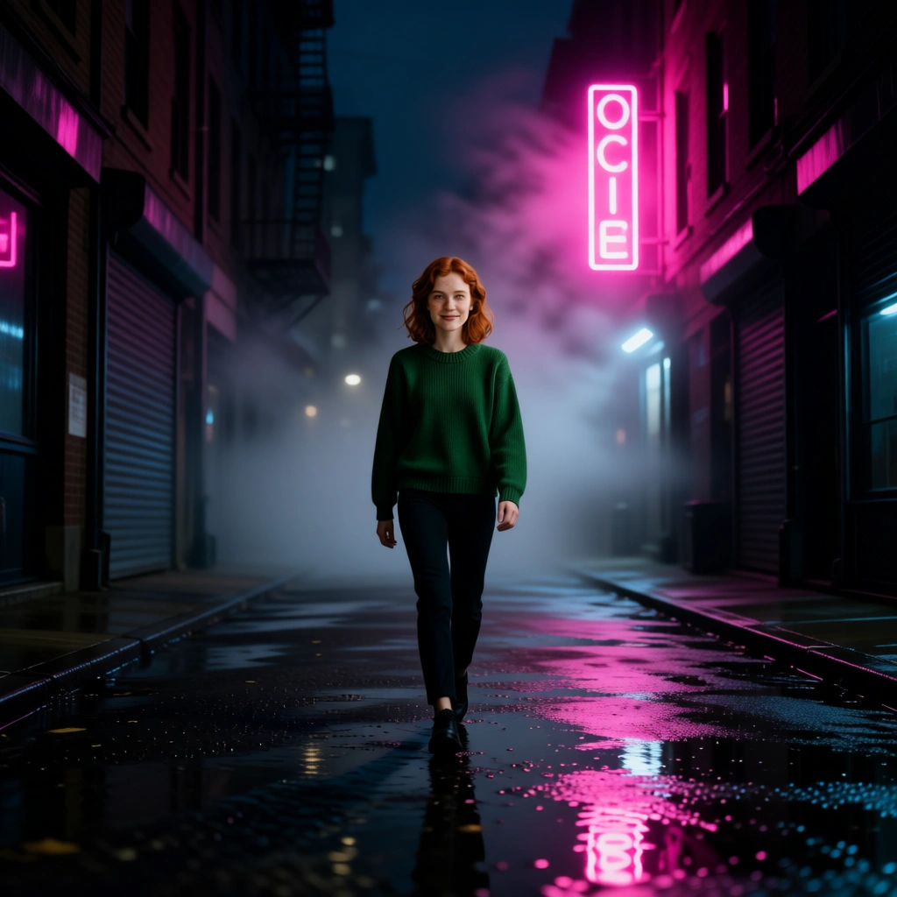
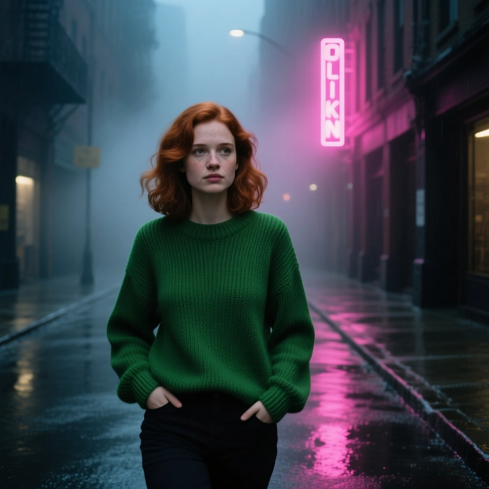
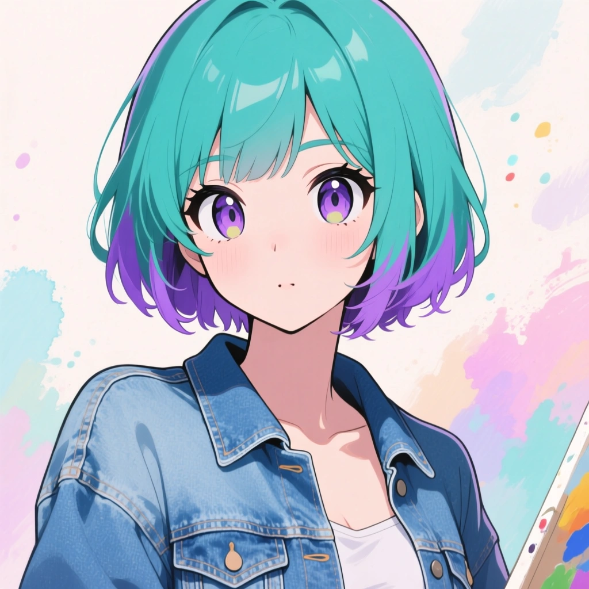
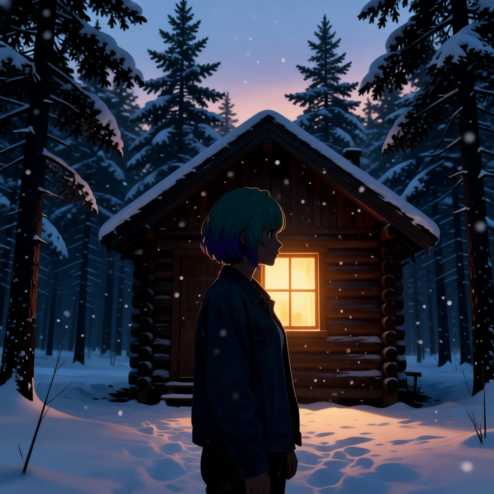
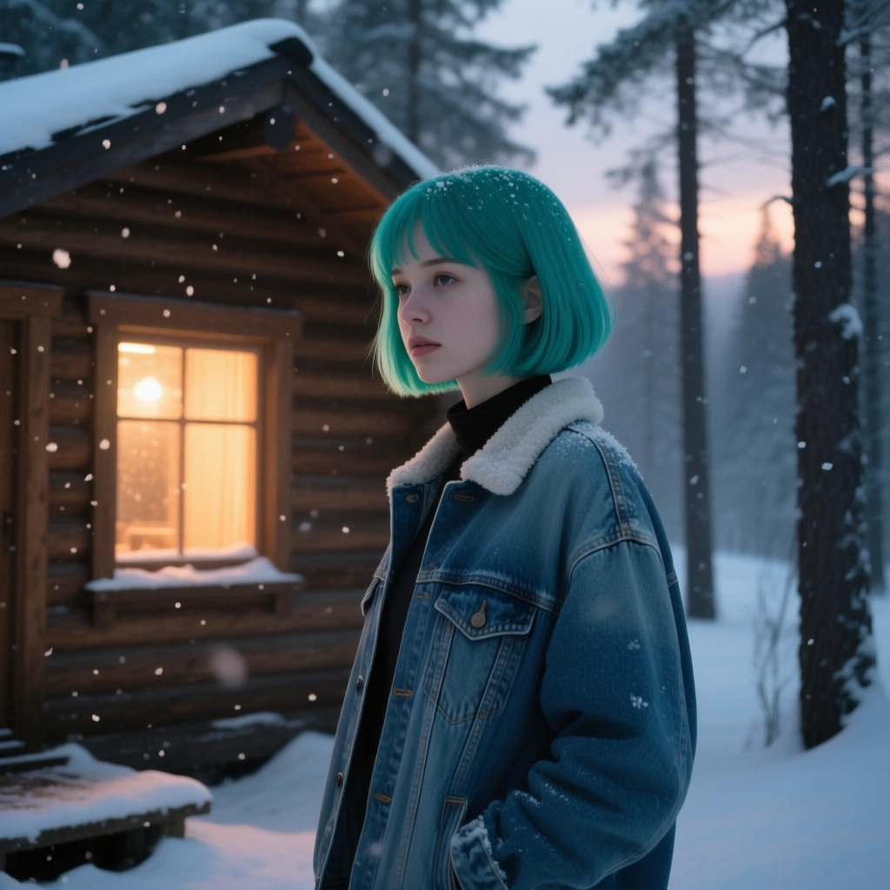
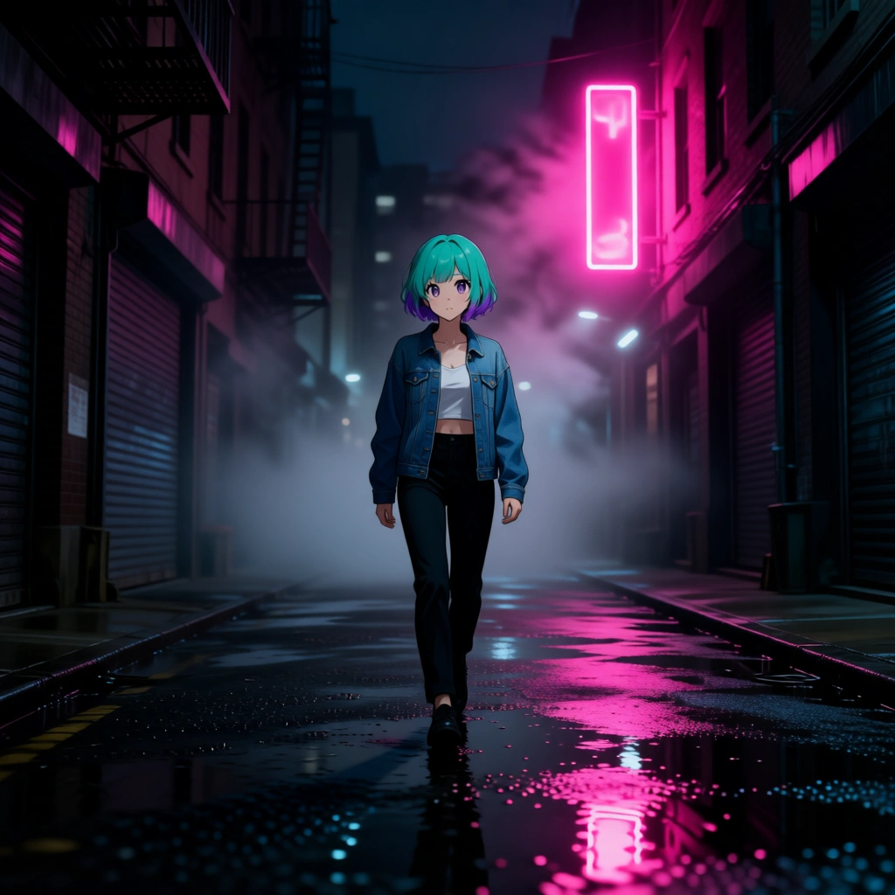
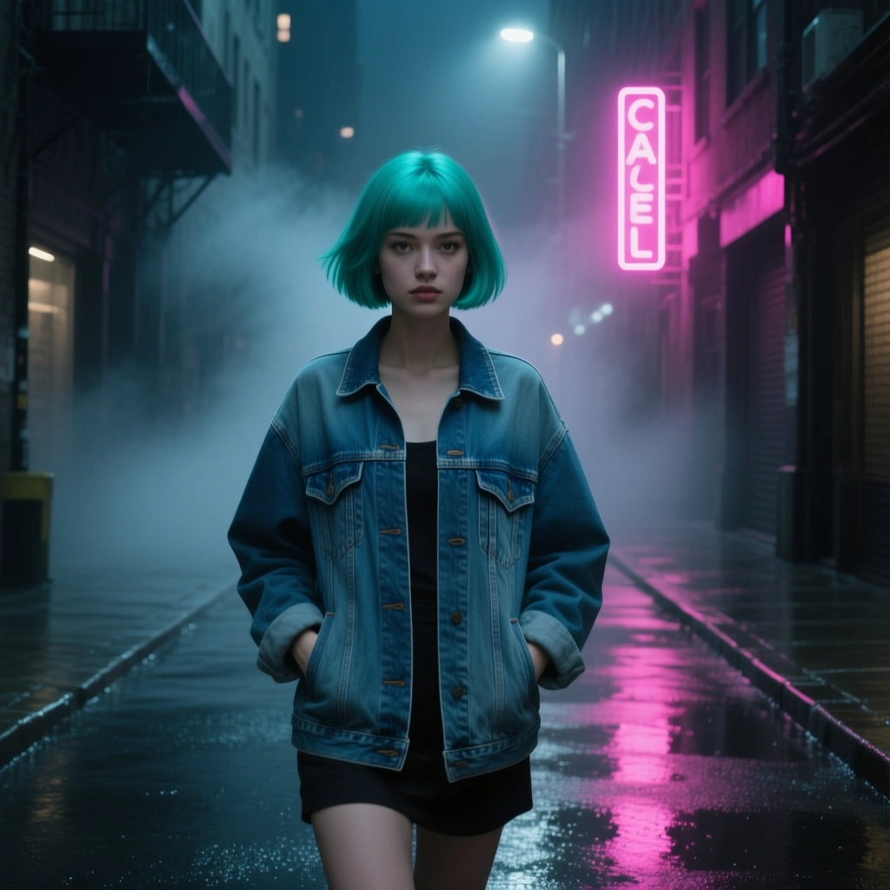

REFRound 1 头像
两种"把用户放进场景里"的 pipeline 对照测试。 A 路 = img2img（把头像当 ref + 通用 scene prompt，当前 v0.7.4 的实现）。 B 路 = txt2img（不传 ref，把头像的特征手写进 prompt 后生图）。 两轮测试：Round 1 用 photoreal 头像，Round 2 用 stylized 头像（更接近真实 Aigram 用户那种 AI 艺术风格的头像）。


cinematic still of the figure standing outside a small wooden cabin alone in a snowy pine forest at dusk, warm light glowing from one window, soft snowfall, the figure half-silhouette against the window glow, muted color grade, atmospheric, photoreal, 1:1
cinematic still of a young woman in her late twenties with auburn shoulder-length wavy hair, fair skin with light freckles, wearing a moss-green knit sweater, standing outside a small wooden cabin alone in a snowy pine forest at dusk, warm light glowing from one window behind her, soft snowfall on her hair and sweater, half-silhouette against the window glow, muted color grade, atmospheric, photoreal, 1:1







"贴上去感"的真凶不是 pipeline，是头像和场景的 style 是否同源。 img2img 工作得很好——当且仅当头像和目标场景同属一个视觉风格（两者都 photoreal，或两者都 stylized）。 跨风格时（anime 头像 → photoreal cinematic 场景）模型只能二选一，要么把头像变成场景的风格（A 路 round 2 cabin 那个小剪影），要么反过来把整张图变成头像的风格（A 路 round 2 alley）。两种都不是用户期待的"我在那个 cinematic 场景里"。
给运行时的策略建议（按工程量从小到大）：
img2img(avatar, prompt="photoreal portrait of the person, studio lighting, photoreal") 把头像"洗"成 photoreal 中间体，再用这个中间体当 ref 进入 scene 生图。多 1 次 img2img（~3 分钟）+ 1 次限速间隔。用户 ID 一致性保留得最好。需要测一下"洗白"效果。我个人倾向 2 → 3 → 4 顺序探索：先做 (2) 试试预处理能不能洗出可用的 photoreal 中间体（成本最小，不改 UI），如果不行再上 (3)。(1) 风险是 Aigram 用户的头像 90% 是艺术风格，那意味着 90% 用户拿到的是"艺术风格小视频"而不是"我在 cinematic 场景里"——卖不动。